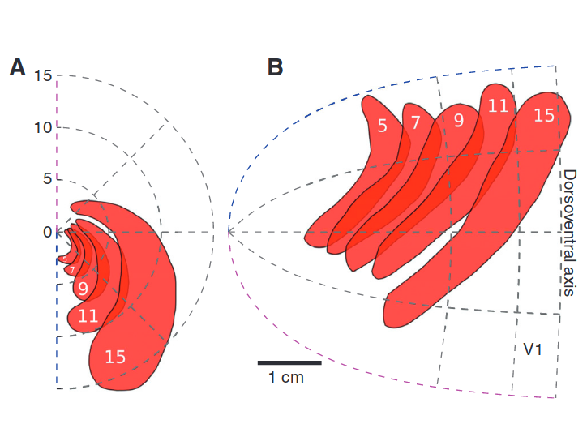
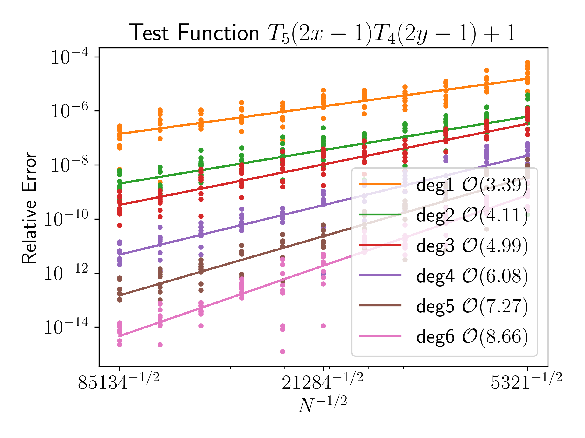

Group Update
Sage Shaw - May 30th, 2024
Kilpatrick Lab
Radial Basis Function Quadrature for Neural Field Equations
- Neural Field Model
- Radial Basis Function Quadrature Formulae
(RBF-QF) - Experimental Results
- Next Steps
Motivating Research
Spreading Depression

Zandt, Haken, van Putten, and Markus (2015)
Retinotopic Map
Zandt, Haken, van Putten, and Markus (2015)
Scintillating Scotoma


Reaction Diffusion Model
$$\begin{align*} u_t &= \underbrace{u - \frac{1}{3}u^3}_{\text{excitable}} - \underbrace{v}_{\text{recovery}} + \underbrace{D\nabla^2 u}_{\text{Diffusion}} \\ \frac{1}{\varepsilon} v_t &= u + \beta + \underbrace{K\int H(u) d \Omega}_{\substack{\text{neurovascular}\\\text{feedback}}} \end{align*}$$
Reaction Diffusion on surfaces
$$\begin{align*} u_t &= 3u - u^3 - v + D \Delta_{\mathcal{M}}u \\ \frac{1}{\varepsilon} v_t &= u + \beta + K \int_{\mathcal{M}} H(u) \ d \mu_{\mathcal{M}} \end{align*}$$
- Surface operators: $\Delta_{\mathcal{M}}, \int_{\mathcal{M}} \cdot d \mu_{\mathcal{M}}$
- Affects speed and stability of waves
Coupled neural field and diffusion equation
$$\begin{align*} v_t &= -v + w \ast s_p(v, k) + g_v \\ k_t &= \delta k_{xx} + g_k(s, s_p, a, b) + I \end{align*}$$- Neural field model
- Coupled potassium concentration
- Models both ignition and propagation of CSD
A Turing Reaction Diffusion System using RBFs
$$\begin{align*} u_t &= \delta_u \Delta_{\mathcal{M}} u + \alpha(1-\tau_1 v^2) + v(1-\tau_2 u)\\ v_t &= \delta_v \Delta_{\mathcal{M}} v + \beta(1-\frac{\alpha\tau_1}{\beta} uv) + u(\gamma-\tau_2 v)\\ \end{align*}$$Neural Field Model
Neural Field Model
$\partial_t \color{blue}{u}(t, \vecx) = -\color{blue}{u} + \int_{\Omega} \color{green}{w}(\vecx, \vecy) \color{red}{f}[\color{blue}{u}(\vecy)] d \vecy$

Recreation of Coombes et al. (2012)
- $\color{blue}{u}(t, \vecx)$ - Activity
- $\color{green}{w}(\vecx, \vecy)$ - Connectivity kernel
- $\color{red}{f}[\color{blue}{u}]$ - non-linear firing rate function
Projection Method (Avitabile 2023)
| scalar: | $\partial_t u(t, \vecx) = -u + \int_\Omega w(\vecx, \vecy) f[u(t, \vecy)] \ d\vecy$ |
| Banach: | $\dot{U}(t) = -U + W(f[U])$ |
| projected: | $\dot{U}_n(t) = -U_n + W_n(f[U_n])$ |
| quadrature: | $\dot{\tilde{U}}_n(t) = -\tilde{U}_n + Q(f[\tilde{U}_n])$ |
Error = projection error + quadrature error
Radial Basis Function Quadrature Formulae
RBF-QF Goal:
- Given a set of points $\{\vecx_i\} \subset \Omega$
- find weights $\{w_i\}$
- such that $\int_\Omega f \approx \sum w_i \ f(\vecx_i)$
RBF-QF Algorithm


- choose quadrature nodes
- partition domain
- choose stencils
- integrate RBF interpolant
- sum over stencil and elements
RBF Interpolation Properties
- scattered nodes in any number of dimensions*
- mesh-free*
- arbitrary order of accuracy*
Experimental Results
Gaussian Test Functions

Gaussian Test Functions

Quadrature Convergence
Testing manufactured solution

Convergence

Next Steps
- Adapt to surfaces.
- Incorporate cortical spreading depression (CSD).
- Study the effects of realistic cortical curvature on CSD wave generation and propagation.